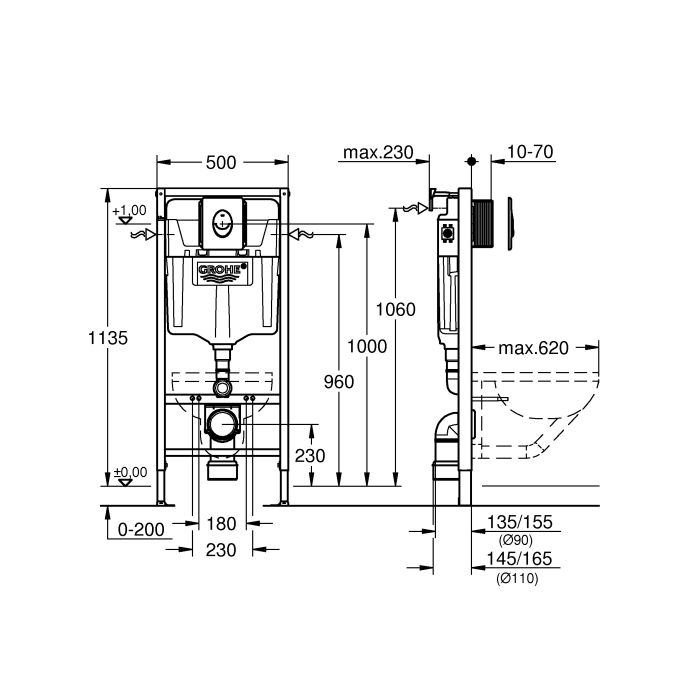

УСТАНОВКА ИНСТАЛЛЯЦИИ УНИТАЗА

Радиаторы уже предусмотрены во всех домах, но ведь иногда бывает так, что даже при наличии нескольких
батарей дом недостаточно хорошо прогревается. В таком случае, если зима особенно холодна, а имеющиеся
батареи не справляются с морозом или просто нет отопительных устройств в какой-то комнате, нужна
установка радиаторов отопления. С ними в доме не будет ужасной влажности, приводящей к грибковому
поражению стен и мебели, не будет ужасных холодов, от которых сводит зубы.
Этапы работы сборки и установка инсталляции в туалете
Грамотный монтаж инсталляции унитаза начинается с проверки места и стен, особенно, если предполагается
крепление унитаза на стену. Он должен выдерживать вес человека. Для этого используются мощные крепежи,
которые монтируются на капитальную стену.
Если стены в порядке, то можно приступить к следующему этапу — разметке стен под крепление рамы. От
правильной и выверенной разметки зависит жесткость итоговой конструкции, ее надежность и правильное
расположение всех деталей. Наши сантехники используют лазерные уровни и профессиональные линейки, которые
обеспечивают точность до десятых миллиметра.
Крепление инсталляции
Следующий этап — крепление кронштейнов или анкеров. Они обычно поставляются в комплекте с инсталляцией.
Иногда лучше купить более мощные анкера, если вам кажется, что, предложенные поставщиком, слишком
хлипкие.
Кроме того, монтаж инсталляции на этом этапе нужно проводить в определенном порядке, который дублируется
в специальной инструкции к оборудованию. Разные системы инсталляций крепятся по-разному, поэтому важно
учитывать особенности конкретной системы.
После прикрепления всех необходимых элементов, начинается монтаж каркаса инсталляции или ее блоков, в
зависимости от типа. На этом этапе нужно идеально выровнять каркас в вертикальном и горизонтальном
измерении. Это делается с помощью регулировки болтов и ножек конструкции по высоте.
В зависимости от типа конструкции (напольная или настенная), установка унитаза с инсталляцией может
потребовать дополнительных креплений или регулировки по высоте. Важно обеспечить правильное положение
всех деталей конструкции.
Подключение к коммуникациям
Недостаточно просто смонтировать оборудование, важно обеспечить его работоспособность. После того, как
установка подвесного унитаза с инсталляцией закончена, нужно подключить и изолировать входные шланги и
сливную трубу. После подключения, мы пускаем воду и проверяем стыки, скорость набора воды, напор при
сливе.
Проблемы при установке
При неправильной установке, часто возникают следующие проблемы:
1 протекание сливного бачка из-за неправильного положения прокладок;
2 застой воды в сливе из-за неправильного положения трубы слива;
3 протекание унитаза из-за слабых прокладок;
4 шатание унитаза и бачка.
Особенности работы с инсталляциями
Это сложное оборудование, которому требуется грамотный монтаж. При установке подвесного унитаза с
инсталляцией, необходимо постоянно контролировать положение отдельных элементов конструкции. В процессе
работы, каркас часто смещается, изменяет угол наклона, поэтому нужно выравнивать его, регулировать
болты.
Важно правильно прикрепить кнопку слива на высоте не более одного метра, канализационная труба должна
располагаться на высоте 22-23 см, слив — строго под углом 45 градусов. В противном случае, процесс смыва
будет затруднен, вода начнет застаиваться, что может привести к появлению неприятных запахов и
повреждению конструкции.
Нюансы установки
Установка инсталляции для унитаза подвесного типа сложнее. В этом случае, нужно учесть сразу несколько
деталей:
— Прочность стены;
— Положение трубы слива;
— Высоту унитаза. Слишком высокое крепление сделает пользование дискомфортным;
— Возможность подведения воды.
Все эти вопросы технически решаемы, однако это может потребовать дополнительных затрат.
Монтаж биде
В принципе, установка биде с инсталляцией выполняется примерно так же: разметка, крепление, монтаж
конструкции, подключение коммуникаций и проверка работоспособности.
Существуют технические особенности, связанные с разными конструкциями биде, точками входа воды и слива,
типом крепления (настенные или напольные). Наши сантехники хорошо знакомы с этими деталями и быстро
справятся с этой работой.